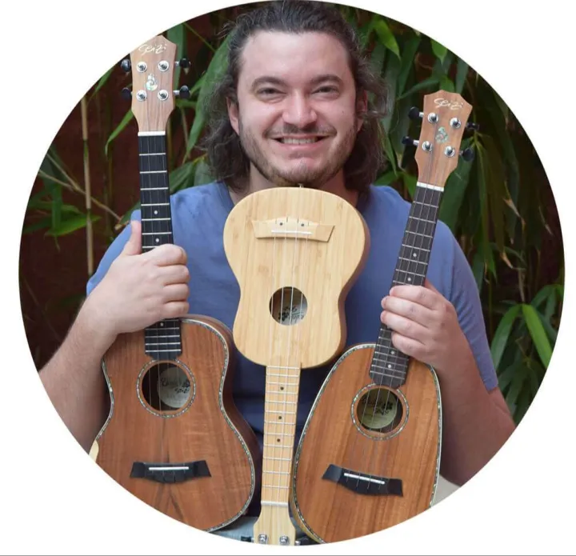

O ensino tradicional
Antes de você encostar no instrumento, chegam a teoria, os conceitos e as listas de acordes para decorar de uma semana para a outra. Nada de tirar som com as próprias mãos, e o prazer vai embora logo na primeira semana.
Aprenda a tocar ukulele em um caminho linear de 4 etapas, com 20 minutos por dia, mesmo que você nunca tenha tocado nada antes.
Compra segura pela Hotmart · 14 dias de garantia
Se você se reconheceu em alguma delas, esta página foi feita para você.
Quase todo iniciante cai em uma de duas armadilhas. As duas terminam do mesmo jeito: a pessoa trava e acha que a culpa é dela.
Antes de você encostar no instrumento, chegam a teoria, os conceitos e as listas de acordes para decorar de uma semana para a outra. Nada de tirar som com as próprias mãos, e o prazer vai embora logo na primeira semana.
Um vídeo ensina técnica avançada, outro ensina música difícil, outro nem explica direito. Você gasta o pouco tempo que tem procurando a aula certa e, quando finalmente senta para tocar, não sai nada.
O que você precisa é de um caminho simples, organizado e na ordem certa, que mostre uma música ganhando vida nas suas mãos logo nas primeiras aulas.
Um sistema prático de micropassos e microvitórias, que eu construí ensinando ukulele desde 2017. Ele vale para cada acorde, batida ou música nova que você for aprender.
Tudo vira partes pequenas: afinar, segurar o instrumento, o primeiro acorde, a primeira batida. Você enxerga exatamente o que treinar, e a sobrecarga vai embora.
Você isola cada movimento e repete devagar, uma coisinha de cada vez. É aqui que os dedos começam a obedecer e chegam as primeiras microvitórias.
Com cada parte destravada, é hora de juntar as peças. A música flui, o som sai limpo e o ritmo fica firme, sem esforço exaustivo.
Pense na música como um bolo, que se come uma fatia por vez. Com 20 minutos hoje, você aprende os acordes; amanhã, a batida. Quando percebe, o bolo acabou e você está tocando a música inteira.

Toco desde os 8 anos, mas a minha história com o ukulele começou em 2014. Eu fazia intercâmbio na Austrália quando recebi um diagnóstico de câncer. Nas longas internações para a quimioterapia, o ukulele era o único instrumento que eu podia levar para o quarto: leve, macio e gentil com as pontas dos dedos, que estavam sensíveis por causa do tratamento. Ele virou o meu refúgio.
Quando me curei, decidi que outras pessoas também mereciam esse refúgio. Tirei do caminho tudo o que era desnecessário e coloquei a prática no centro do ensino. Hoje lidero uma das maiores comunidades do instrumento no Brasil.
Minha missão é te provar que a música pode ser leve, acessível e o melhor momento do seu dia, sem teoria chata nem frustração.
O curso organiza o Método 3D em 4 etapas, na ordem certa, para você sair do zero (ou destravar de vez) e tocar suas músicas favoritas do início ao fim.
Postura, afinação e a sua primeira música completa, com acordes de apenas um dedo. A prova real de que você consegue tocar.
As 3 batidas coringas, que servem para centenas de músicas, exercícios de coordenação e o segredo das trocas de acordes sem travar.
Aqui a gente lapida o seu toque para o som sair limpo e bonito, do jeito que você imagina.
As famílias de acordes que abrem a porta para a maioria das músicas populares. Você pega o ukulele e toca na roda de amigos.
Cupom de R$ 200 de desconto
De R$ 597 por
R$397à vista
ou 12x de R$ 41 no cartão
Pagamento 100% seguro via Hotmart
O cupom de R$ 200 é temporário e vale só nesta página.
Você tem 14 dias para acessar tudo, testar o curso e, se não curtir, por qualquer motivo e sem letrinha miúda, recebe 100% do seu dinheiro de volta.
O risco é todo meu. A decisão é sua.
Se você se identifica com algum destes perfis, tenho certeza de que o Ukulele Fundamental é para você.
Comprei o ukulele, mas ele ficou parado. Não sei o que fazer primeiro.
Sinto vergonha até de tentar. Parece que todos já sabem, menos eu.
Sei acordes, mas não consigo juntar tudo em uma música fluida.
Cada vídeo ensina de um jeito. No final, fico travado e confuso.
Sim! O Ukulele Fundamental foi criado exatamente para quem está começando do zero. Você aprende passo a passo, com segurança e praticidade, desde como segurar o instrumento até tocar as suas primeiras músicas completas.
Com certeza. Se você já começou a aprender, mas sente que não evolui ou que falta organização no seu estudo, o curso corrige a sua base e acelera a sua autonomia musical.
Sim. O Método 3D (dividir, destravar e dominar) foi feito justamente para quem sente os dedos duros ou travados. A coordenação aparece com os exercícios certos, no tempo certo.
Não! Você aprende direto na prática, dentro de músicas reais. A teoria que aparece aqui é só a que faz sentido na hora em que você precisa, e nunca como pré-requisito.
Vinte minutos por dia, no lugar de um tempo que iria para o celular, já trazem progresso real. A primeira música costuma sair na primeira semana. O curso foi pensado para quem tem pouco tempo e quer viver esse momento como lazer, e não como obrigação.
Tem muita coisa boa de graça, sim. O que a internet não entrega é a ordem certa e alguém do seu lado enquanto você estuda e toca. É isso que o Ukulele Fundamental organiza para você.
Sim. Na Comunidade Exclusiva de Alunos (acesso por 1 ano), você tira dúvidas sobre as aulas, pede ajuda com músicas e mostra a sua evolução. Sempre tem um professor ou um aluno mais experiente para te ajudar.
Não! O acesso ao curso é vitalício. Você segue no seu ritmo, sem pressão, e revisita as aulas sempre que quiser. Os bônus (comunidade, biblioteca de músicas e workshop de canto) ficam liberados por 1 ano.
Sim. Você tem uma garantia incondicional de 14 dias. Se por qualquer motivo não quiser continuar, é só solicitar o reembolso e você recebe 100% do valor de volta.
O método está pronto, na ordem certa, e você tem 14 dias para testar tudo sem arriscar nada. Falta só um passo, e esse eu não posso dar por você.
Compra segura pela Hotmart · 14 dias de garantia
Ficou com alguma dúvida sobre o curso ou quer saber se ele é para você? Clique no botão abaixo e fale com a gente.
Clique aqui para conversar